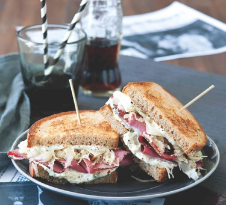

Lunch

Image source: images.immediate.co.uk
Reuben Sandwich
Nothing spells out a quick lunch more than a sandwich. And the classic Reuben is the perfect lunch break when your out and about. Corned beef or pastrami if you prefer; sauerkraut, cheese, sauce. It almost tastes like New York - if you could eat NYC!
This recipe is from bbcgoodfood.com
Ingredients
-
8 Slices corned beef.
-
100g Gruyère cheese, sliced.
-
4 Tbsp butter, softened.
-
8 Thick slices rye bread.
-
75g White sauerkraut.
For the Mayonnaise
-
100g Mayonnaise.
-
2 Tbsp soured cream.
-
1 Small shallot, finely chopped.
-
2 Tbsp parsley, finely chopped.
-
2 Tbsp pickled cucumber relish.
-
1/2 Tbsp creamed horseradish.
-
1/2 Tbsp worcestershire sauce.
-
2 Dashes hot sauce.
-
1/2 Lemon, juiced.
Steps
-
Prepare the mayonnaise by mixing all the ingredients together in a bowl minus the lemon juice. Season to taste with salt, pepper and the lemon juice.
-
Place the corned beef on a baking tray lined with baking paper, top generously with the cheese and grill under a salamander grill at high heat until cheese is bubbling and melting over the corned beef. Tip: if you don't have a salamander grill at home you can use an oven.
-
Liberally butter both sides of the bread and toast both sides in a frying pan over a medium heat until golden.
-
Spread the mayonnaise with love on one side of each slice of bread.
-
Top four slices of bread, mayonnaise-side up, with the cheese-toped corned beef and sauerkraut. Then sandwich the remaining slices, mayonnaise-side down.
-
Secure with cocktail sticks, slice in half and imagine your in a NYC deli!
{kind=link}